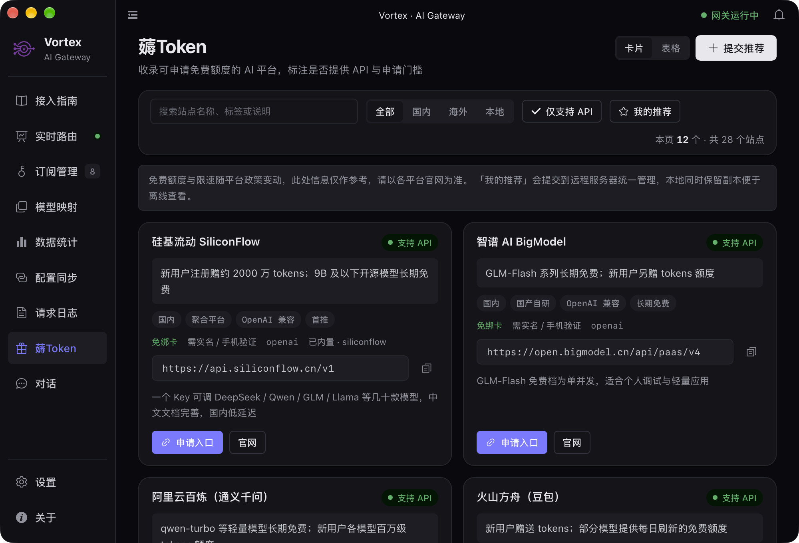
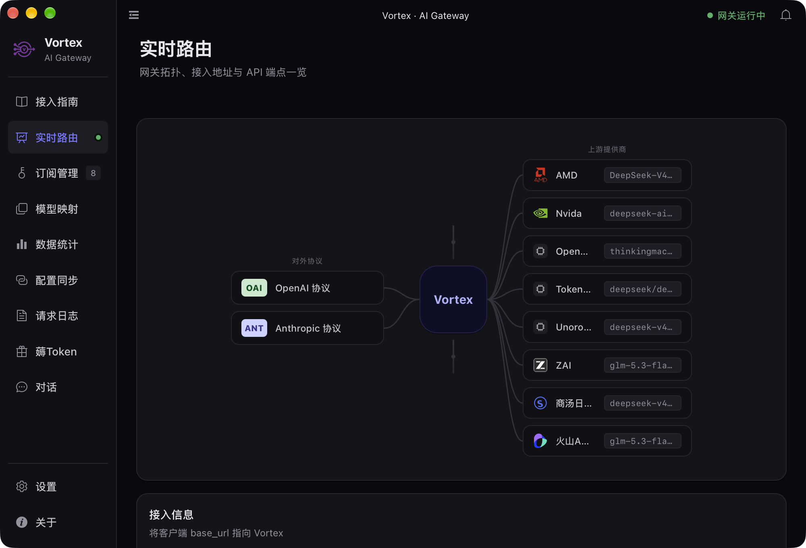
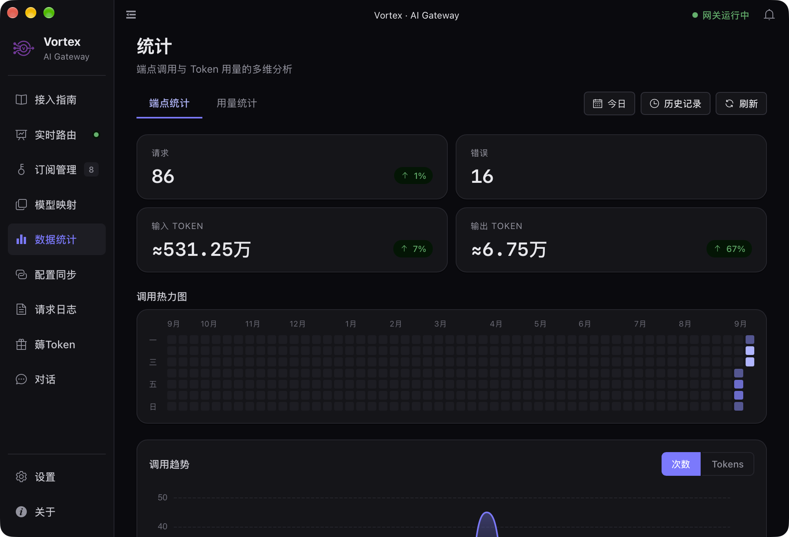
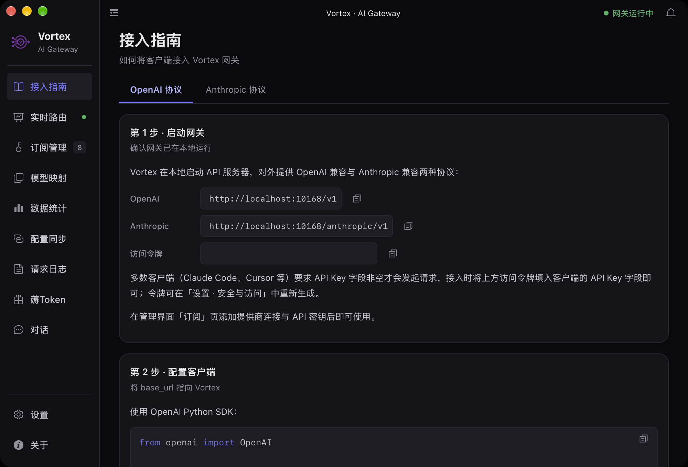
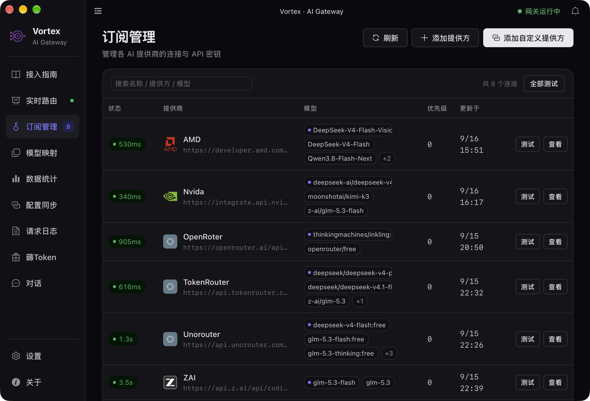
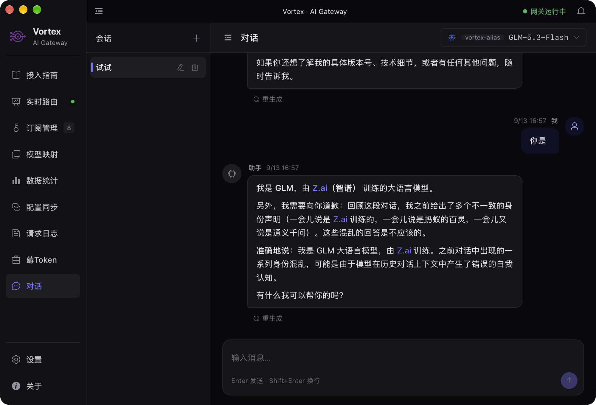
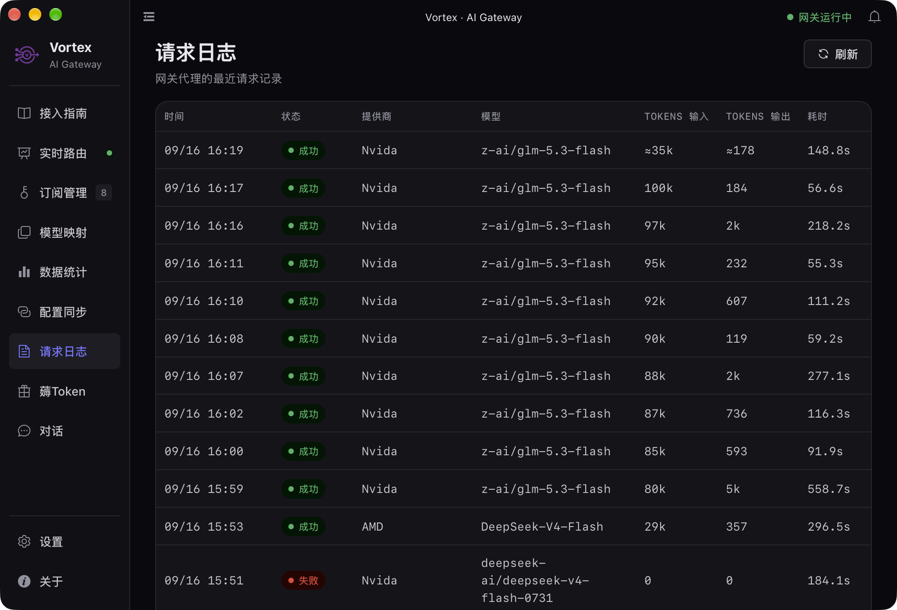
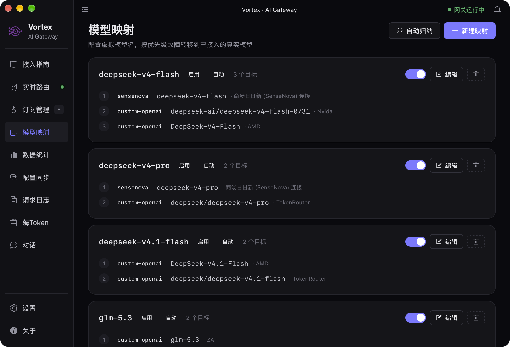

Vortex 在你自己的机器上启动一个 OpenAI 兼容的 API 服务器，
把云端 API、聚合平台与本机推理统一成一个入口。
改一行 base_url，客户端代码不用动。
内置多家平台的预置连接模板，同时兼容任意 OpenAI 协议端点。接哪一家由你决定 —— 完整清单见应用内「订阅」页，随版本更新。
平台官方接口，在「订阅」页填 Key 即可，不必手写 base_url。
一个 Key 通多家模型的中转服务同样支持，模型按 provider/model 指定。
指向本机或局域网内的推理服务，数据不出内网，断网也能用。
内置 Custom 类型，任何 OpenAI 兼容端点都能加，一样参与路由、熔断与统计。
不是又一个代理工具 —— 而是把「多供应商、多协议、多密钥」这团乱麻，收成一个你自己的本地服务。
内置预置注册表：云端官方接口、聚合中转平台、本机推理服务都在列，填个 Key 就能用，不必手写 base_url。
把客户端的 base_url 指向 http://localhost:10168/v1，其余代码零改动。
上游的非 OpenAI 原生格式与 OpenAI 格式互转，包含 SSE 流式响应 —— 换个上游，下游无感知。
上游抖动时不把你的请求打光。失败端点自动熔断，恢复后自动放量，保障整体可用性。
所有 API Key 加密落盘在本地 SQLite，加密密钥由本机生成，不经过任何第三方服务器。
按提供商、模型、时间维度记录请求数、Token 用量与成本，热力图与趋势图一眼看清花费去向。
内置 43 个可申请免费额度的 AI 平台，标注是否支持 API、是否需绑卡与实名，还能自己提交推荐。
系统托盘一键启停代理，Vue 3 图形界面管理连接、日志、统计与配置，不必守着终端。
应用内直接对话，支持会话分支树、模型选择与流式输出；桌面端经原生 IPC 通道直达网关，无需外部客户端即可验证网关通路。
启动时静默检查 GitHub Releases，发现新版本提示下载安装，一键更新到最新版。
请求日志、密钥、配置都存本地 SQLite。这是一个跑在你本机的进程，不是托管服务 —— 没有中间人。
每个提供商可绑定多模型并自定义别名，列表行内健康测试、延迟毫秒与最近通过时间一目了然。
给一组模型配一个虚拟名，客户端只认这个名字；网关按优先级依次尝试各目标，某个失败自动切换下一个。
既有 OpenAI 兼容端点，也提供 Anthropic Messages 兼容的 POST /v1/messages；Anthropic SDK 与 Claude Code 改个 base_url 就能接。
每次网关请求记录状态、Token 输入输出与耗时；流式请求结束时回填真实用量，失败请求同样记入日志。
以下均为应用真实运行截图（暗色主题），非设计稿。








截图来自本机开发实例（localhost:1420），数据为真实运行状态。
需要 Rust 1.70+、Bun（或 Node 20.19+ / 22.12+）与 Tauri 2 的系统依赖。
安装 Rust 与 Bun，再按 Tauri 官方文档装好各平台构建依赖。
仓库自带 bun.lock，用 Bun 安装最省事。
一条命令同时拉起前端与 Rust 后端。界面在 localhost:1420，网关在 localhost:10168。
在「订阅」页填入上游 API Key，然后把任意 OpenAI 客户端的 base_url 指向 http://localhost:10168/v1。
# 安装依赖 bun install # 开发模式（前端 + Rust 后端） bun run tauri dev # 构建生产版本 bun run tauri build # 网关默认监听 # http://localhost:10168/v1
from openai import OpenAI
client = OpenAI(
base_url="http://localhost:10168/v1",
api_key="vx-4f2a9c1e8b7d4a6f9c3e2b1a8d5f7c40", # 由 POST /api/keys 创建
)
resp = client.chat.completions.create(
model="your-provider/your-model", # provider/model 格式
messages=[{"role": "user", "content": "Hello!"}],
)
print(resp.choices[0].message.content)
import OpenAI from 'openai'
const client = new OpenAI({
baseURL: 'http://localhost:10168/v1',
apiKey: 'vx-4f2a9c1e8b7d4a6f9c3e2b1a8d5f7c40',
})
const stream = await client.chat.completions.create({
model: 'your-provider/your-model',
messages: [{ role: 'user', content: 'Hello!' }],
stream: true,
})
for await (const chunk of stream) {
process.stdout.write(chunk.choices[0]?.delta?.content ?? '')
}
POST /v1/chat/completions
GET /v1/models
POST /v1/embeddings
POST /v1/images/generations
POST /v1/messages
your-provider/your-model
显式指定提供商与模型
<别名>-<模型名>
用提供商别名缩写
<虚拟模型名>
自定义别名，多目标按序故障转移
从客户端发出到上游返回，中间发生了什么。
客户端把 base_url 指向本地网关，发出标准 OpenAI 请求。
先匹配「模型映射」虚拟名（多目标按序故障转移），未命中再按 provider/model 定位提供商连接与密钥。
按上游格式重写请求体，非 OpenAI 原生格式与 OpenAI 互转。
熔断器判断端点健康度，失败则指数退避重试。
转发请求，回传响应（含 SSE 流）；流结束时回填真实 Token，成功失败都写入请求日志。
选你的平台直接下载，按钮始终指向最新版本 —— 安装包由 GitHub Actions 在推送 v* tag 时自动构建并发布到 Releases。
安装包随版本更新。想第一时间收到通知，可在 GitHub 仓库 点 Watch → Releases only。
不想用安装包？也可以从源码构建：bun install → bun run tauri build，各平台依赖见
Tauri 构建依赖说明。
model 前缀即可），还能叠加熔断重试、统一用量统计与密钥集中管理。所有请求仍然直连上游，不经过第三方中转。
VORTEX_ENCRYPTION_KEY 指定）。没有云端账号，也没有遥测上报。
/v1/chat/completions 同时支持流式与非流式；协议转换层会在流式路径上逐块重写事件格式，因此即使上游并非 OpenAI 原生协议，下游也能拿到标准的 SSE 流。
provider/model（如 your-provider/your-model）显式指定提供商；或使用提供商别名前缀，形如 <别名>-<模型名>。完整清单与别名表见应用内「订阅」页与 README。
my-fast-model），并绑定多个已接入的真实模型作为目标，按优先级排序。客户端直接用虚拟名发请求，网关依次尝试各目标：某个失败自动切换下一个，全部失败才报错 —— 相当于给「一组备用模型」一个永远稳定的入口。
POST /v1/messages，协议转换层会把请求按上游格式改写。把 Anthropic SDK 或 Claude Code 的 base_url 指向 http://localhost:10168（SDK 会自动拼接 /v1/messages），模型同样用 provider/model 或虚拟模型名指定。
base_url 与 Key 即可，它与内置提供商一样参与路由、熔断与统计。
v* tag（或在 Actions 里手动触发）后，会自动构建 Windows x64、macOS（Apple 芯片与 Intel 两个架构）与 Linux x64 的安装包并发布到 GitHub Releases。页面顶部的下载区按钮直接指向最新版本的产物，不需要自己编译。
xattr -cr /Applications/Vortex.app 清除隔离属性后即可正常打开。如果仍不行，前往「系统设置 → 隐私与安全性」，在底部找到 Vortex 的提示点「仍要打开」。
10168，通过环境变量 VORTEX_PORT 修改。另外还支持 VORTEX_DATA_DIR（数据目录）、VORTEX_REQUIRE_API_KEY（是否强制校验客户端密钥）、VORTEX_LOG_LEVEL（日志级别）。
v* tag 时自动构建。
POST /v1/chat/completions SSE，无需外部客户端即可验证网关通路与上游连通性。